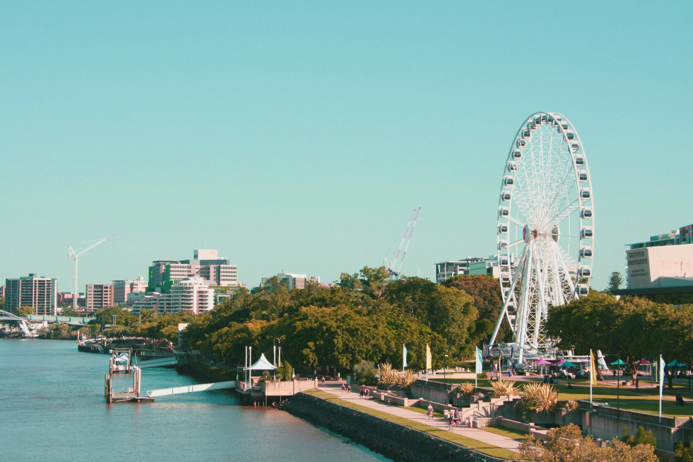
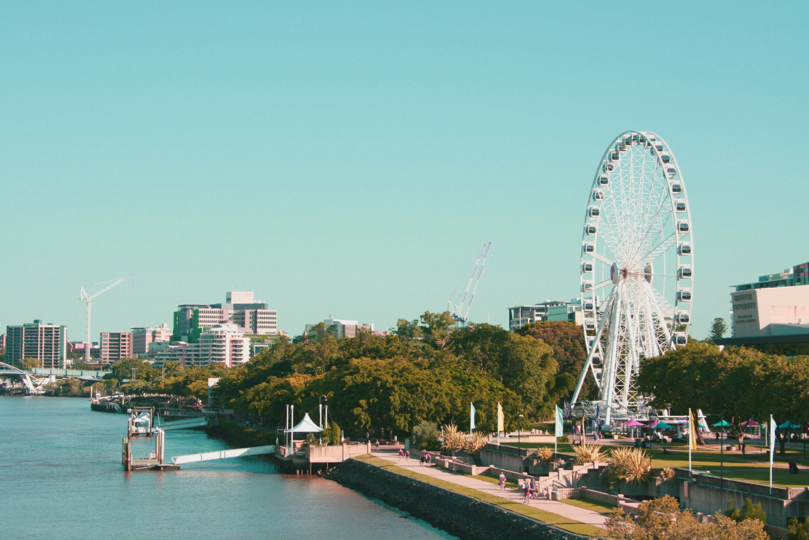

Nossa Localização
Estamos localizados em uma área deslumbrante, perfeita para relaxar e criar memórias inesquecíveis.
Atrações Próximas
- Montanhas Aventureiras - Perfeito para trilhas e explorar vistas incríveis.
- Beira do Lago Sereno - Ideal para pesca, piqueniques ou passeios tranquilos de barco.
- Marcos Históricos - Descubra a rica história da região.
- Mercados de Artesanato Local - Explore peças únicas e feitas à mão.
- Gastronomia Gourmet - Saboreie pratos sazonais frescos em restaurantes aconchegantes.
- Trilhas de Ciclismo - Descubra paisagens deslumbrantes pedalando.
- Colina do Pôr do Sol - Uma vista panorâmica incrível para apreciar o entardecer.
- Parques para Piqueniques - Aproveite o dia em parques tranquilos com sua família.
- Jardins Botânicos - Caminhe por jardins exuberantes e bem cuidados.
- Parque de Aventuras - Aproveite atividades emocionantes como tirolesa e escalada.
 
